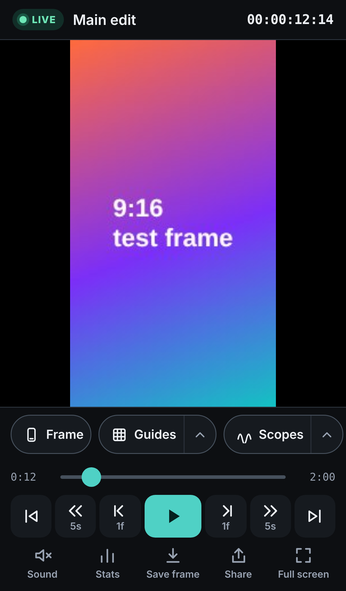
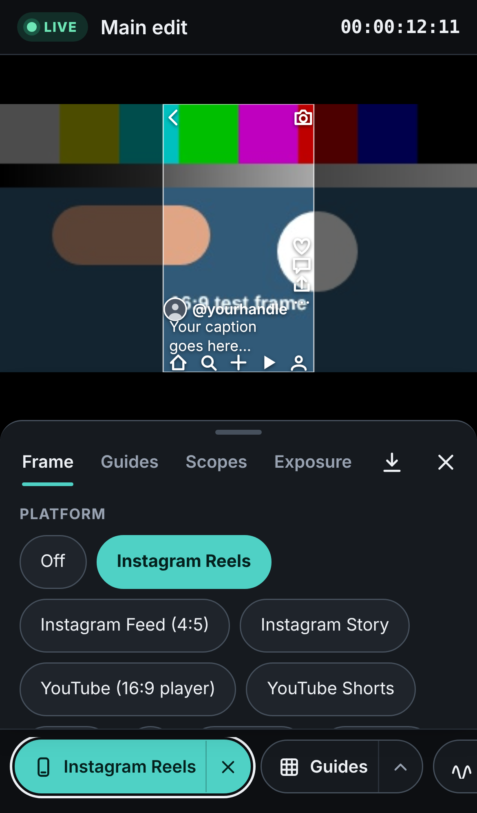
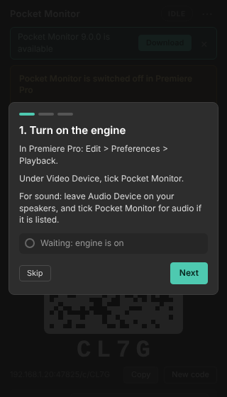

See your edit on your phone, live.
Pocket Monitor sends the picture and sound from Premiere Pro or After Effects to any phone on your Wi-Fi. Add guides, safe zones and social frames on top. No cables, no account, no app to install on the phone.
Free. Version .
What it looks like




Three steps
- Run the installer. Open Premiere Pro or After Effects, then Window > Extensions > Pocket Monitor.
- Turn on the engine in the preferences (the panel shows the exact clicks).
- Scan the QR code with your phone. Tap Overlays or Sound.
What you need
- Windows 10 or 11
- Premiere Pro or After Effects 2024 or newer
- A phone on the same Wi-Fi as the computer
Your video never leaves your network. Read more.